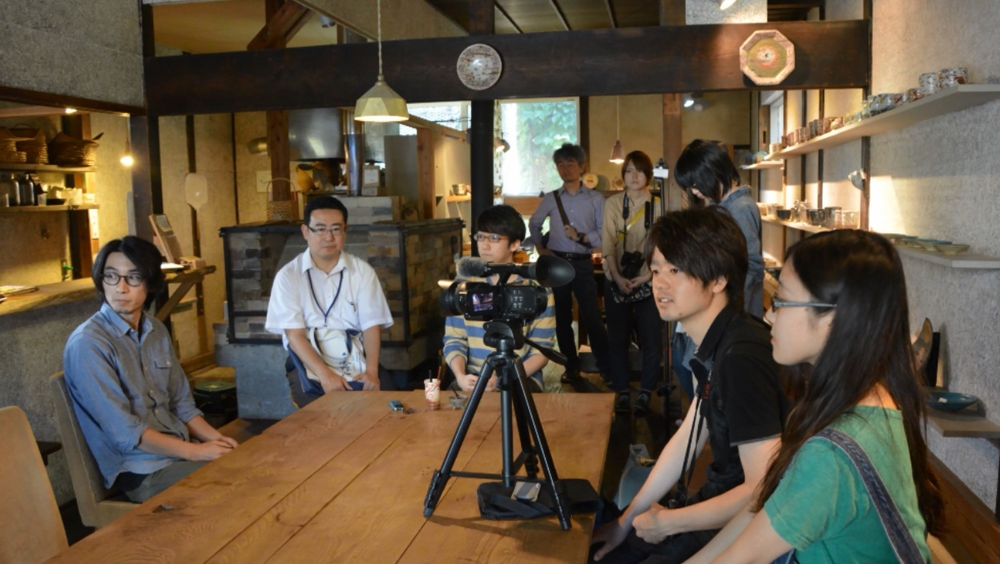
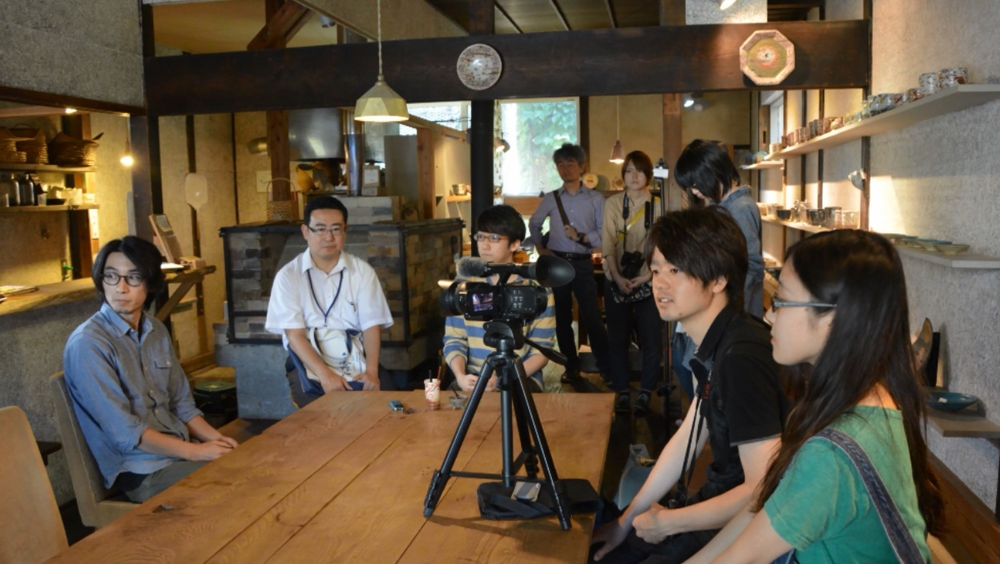

Work - 一年間の変遷
活動を振り返る
コンセプトは「私たちの変化をユーモラスにまとめる」。今まで、西部地区を舞台に映像を制作してきた私たちの活動の変遷を、再現映像やオリジナルの楽曲を用いて表現しました。
自分たちの活動を楽しく振り返り、かつ初めてハコダテソラカメラの存在を知る方々にも活動内容を知ってもらえるよう、随所に盛り上げるポイントを盛り込みつつもフィクションの無い構成にした。
 
